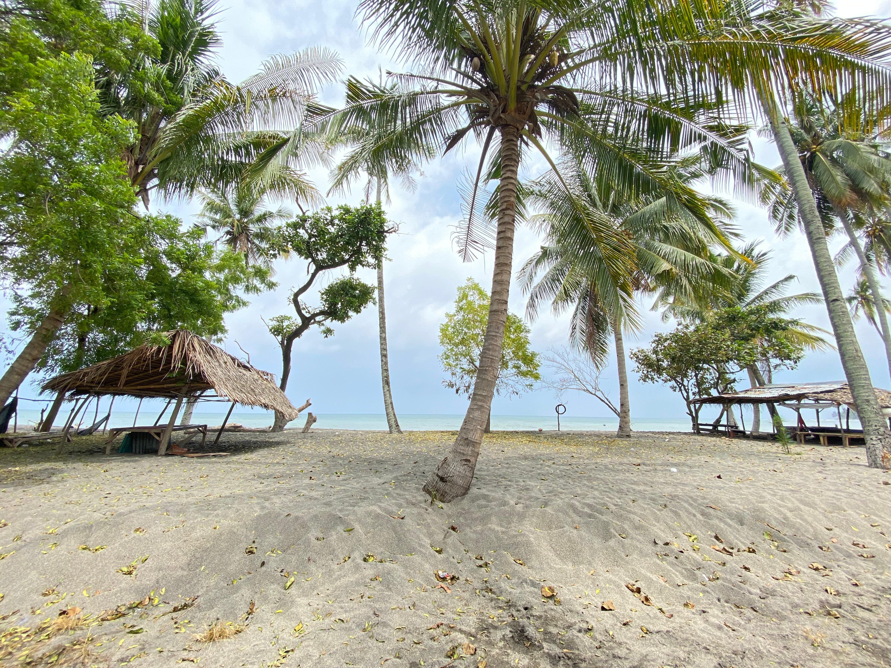

Pantai Karang Atas
Pantai Karang Atas
Pantai Karang Atas atau juga dikenal Pantai Tanjung Atas merupakan pantai yang ada di Desa Sokong. Pantai ini menjadi tempat yang pantas untuk camping, memancing, dan menikmati keindahan sunset di sore hari. Pantai ini dikelola oleh Kelompok Sadar Wisata atau Pokdarwis Kembang Dangar.

Gallery


Lokasi
KKN PMD Desa Sokong 2024-2025
© 2024 KKN PMD Desa Sokong - Universitas Mataram. Website ini dikembangkan sebagai upaya mendukung pengembangan Desa Wisata Sokong dengan menyediakan informasi wisata, budaya, dan produk lokal. Bersama kita wujudkan desa yang maju, berdaya, dan lestari. 🌿✨
Copyright © KKN PMD Desa Sokong 2024-2025